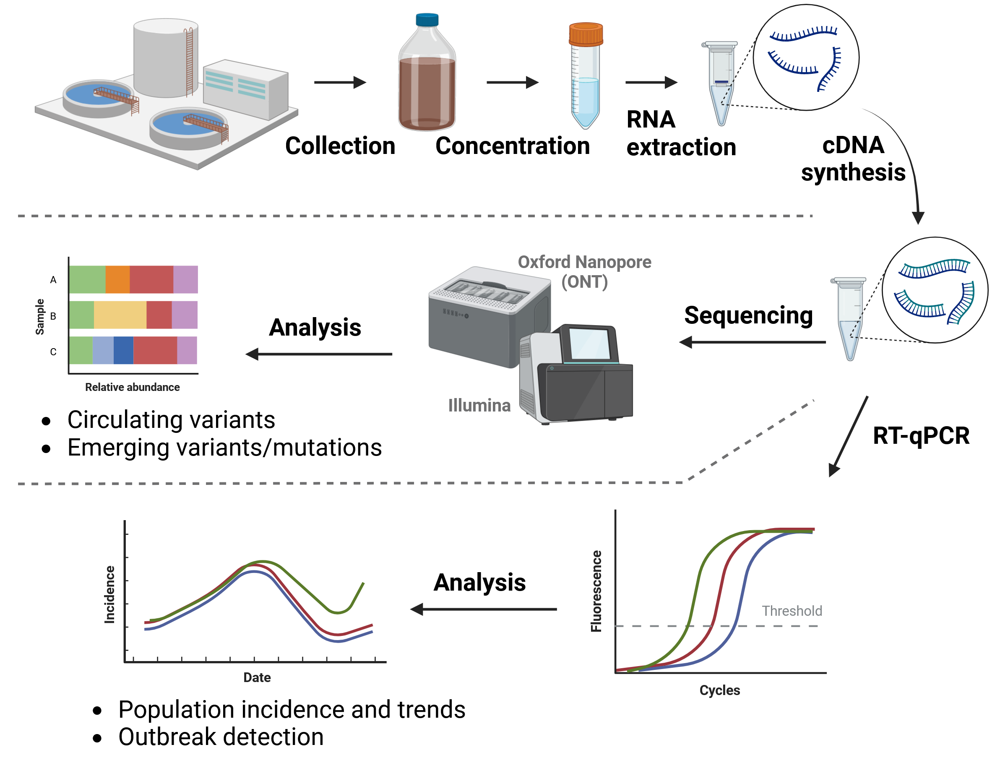

11 Wastewater Surveillance
- Define what wastewater surveillance is and how it can complement surveillance from clinical cases.
- List the different approaches to wastewater surveillance and some of their advantages and disadvantages.
- Summarise the steps in sample preparation and recognise the critical importance of sample concentration protocols.
- Differentiate between RT-qPCR and sequencing-based methods, namely on what information each type of approach gives.
- Recognise the importance of metadata collection and list critical information that should be recorded for every sample.
11.1 Overview
Wastewater surveillance is an important method of pathogen surveillance, which can complement the surveillance achieved by sampling clinical cases (reviewed in Diamond et al. 2022 and Gitter et al. 2023). Wastewater surveillance has been successfully applied to monitor different pathogens such as poliovirus, Salmonella, influenza and respiratory syncytial virus (e.g. Klapsa et al. 2022, Yanagimoto et al. 2020, Faherty et al. 2024, Koureas et al. 2023). With the COVID-19 pandemic, wastewater surveillance has also rapidily developed to monitor SARS-CoV-2 (Nature Microbiology editorial 2022).
Different methodologies can be employed, which are complementary to each other and achieve different outcomes:
- Metagenomics can be used to characterise the diversity of pathogens circulating in the population. One of its main advantages is that it does not require prior knowledge of the pathogens circulating the population. However, this is an expensive method, with low sensitivity to detect low-abundance pathogens.
- Targetted RT-qPCR can be used to estimate the prevalence of a pathogen in the population. This is a relatively cheap and quick method that can be applied to monitor the incidence of the pathogen across time and geographic regions. However, this method requires prior knowledge of the target genome and it does not give an indication of which strains are circulating in the population.
- Amplicon-based Sequencing can be used to infer the relative abundance of lineages and mutations circulating in the population. This method also requires knowledge of the target genome, and cannot be used to estimate the prevalence of the virus in the population.
Which of these methods to use depends on the objectives of the surveillance and it is important to be aware of the strenghts and limitations of each. We refer to Child et al. 2023 for a comparison of metagenomic and targetted approaches for monitoring of respiratory viruses. For example, while a shotgun metagenomics approach may seem attractive (as it does not target any specific pathogen), it is very expensive and may fail to detect low-abundance viruses in wastewater samples, despite very deep sequencing.
These materials focus mainly on the bioinformatic analysis of amplicon-based whole genome sequencing approach, specifically for SARS-CoV-2.

11.2 Wastewater vs clinical surveillance
Both wastewater and clinical surveillance are relevant for public health monitoring of pathogens, having their respective advantages and disadvantages.
Some of the advantages of wastewater surveillance, compared to clinical sampling, are:
- Cheaper: a single wastewater sample can capture the diversity in a population of individuals, making it cheaper than sampling the equivalent number of clinical cases.
- Faster: with the correct infrastructure in place, wastewater samples can be faster to process compared to clinical samples, which involve working with medical staff and manage sensitive patient data.
- Flexible: wastewater sampling can be used to monitor broader population trends (e.g. sampling from sewage treatment plants) or monitor local outbreaks (e.g. sampling wastewater in hospitals or other caring facilities).
- Wider pathogen coverage: although we focus on SARS-CoV-2, multiple pathogens can potentially be surveilled from the same wastewater sample.
- Better population representation: wastewater sampling does not depend on clinical cases or testing acceptance. Therefore, it can capture under-represented groups, isolated populations and asymptomatic cases.
- Laboratory infrastructure: as wastewater sampling does not rely on clinical sampling of cases, there is no need for local molecular testing facilities. Wastewater samples can be processed in a central laboratory, provided their storage and transport is done in time.
However, it also comes with some disadvantages and challenges:
- Heterogenous samples: there is a high variation in the physiochemical properties of wastewater samples. Variation can occur between geographic regions and seasons, with factors such as the amount of organic matter, salt, pH, and retention time of water in the sewage system.
- Sample preparation: Related to the previous point, wastewater sample processing requires optimised protocols for concentrating and cleaning the material.
- Pathogen coverage: wastewater surveillance is only suitable for pathogens whose genetic material is stable in wastewater and that are shed in human faeces or urine.
- Low concentrations: the amount of virus particles present in the wastewater sample is typically very low, leading to challenges in detecting their presence in the samples.
- RNA degradation: for RNA-based viruses degradation can exarcebate the challenge of obtaining enough material for sequencing, as well as potentially leading to incomplete genomes in the sample. Degradation can vary depending on the travel time in the pipework, the physiochemical properties of the wastewater, as well as the time to process the samples and their storage conditions.
- Centralised wastewater systems: population-level wastewater surveillance requires access to central wastewater collection systems (wastewater treatment plants). Therefore, it is not suitable for populations using septic tanks or lacking access to sewage systems.
- Sampling infrastructure: although potentially more affordable than clinical sampling, wastewater surveillance still requires sampling stations to be in place across the sewage network, if a representative picture of the population trends is desired.
- Interpretation of results: a measure such as the number of cases or number of variants circulating in the population is easy to communicate and interpret, however wastewater results provide only with correlational measures of these numbers of interest. Therefore, they can be more challenging to communicate with other professionals or the general public.
- Disease status: as wastewater samples contain a mixture of viruses from different individuals, is not possible to associate the viral strains circulating in the population with the disease severity of individual patients.
- Validation: the results from wastewater surveillance should be interpreted with care, in particular lineage abundance estimations, which may be biased for several reasons. Therefore, follow-up validation is required, for example to confirm new mutations being detected.
11.3 Sample preparation
As we are focusing on bioinformatics, this is not a topic we will go into much detail. However, see the ECDC course “Introduction to SARS-CoV-2 wastewater analysis”, which thoroughly covers this topic.
Briefly, one of the main challenges in wastewater surveillance is preparing the samples to obtain good quality DNA/RNA suitable for downstream steps. The raw wastewater sample contains many solid residues and the viral material will be extremely diluted. Therefore, an important first step in processing samples is sample concentration and cleaning. There are several methods to achieve this, none of which is universaly better than the others. This is because of the heterogeneity of the samples, mentioned earlier, which means that different methods may work better or worse for different samples.
Typical concentration methods involve precipitation (e.g. with polyethylene-glycol), ultra-centrifugation, adsorption–precipitation methods or even direct capture (e.g. with silica column membranes or magnetic beads). After the material is concentrated, RNA (or DNA) can be extracted using standard protocols, which typically involve the lysis of the viral particles, capturing the RNA using beads or membranes, followed by washing and elution in a suitable buffer. A critical step in the preparation protocols is the removal of PCR inhibitors, which hinder downstream steps relying on amplifying the target genome of interest.
The choice of which method is used should be considered by trialling different methods, to assess which one works best for the samples received in the surveillance lab. Samples from different geographic regions and samples across the year should be tested, and the use of internal controls can be used to assess the effectiveness of the protocols being used (e.g. spiking the samples with a known virus at a known concentration).
11.4 Viral prevalence with RT-qPCR
Even though these materials focus on the bioinformatic analysis of amplicon whole-genome sequencing data, we briefly detail the use of RT-qPCR to assess the prevalence of the virus in the population. If you want to know more about this topic, including the considerations in data normalisation, see the ECDC course “Introduction to SARS-CoV-2 wastewater analysis”.
This method relies on using RT-qPCR to assess the abundance of virus material in the sample. Standard curves are used to convert the Ct values from the qPCR to RNA concentration for each sample. Typically, the qPCR is done for two to three genes, to obtain a more robust average estimation of the viral abundance in the sample.
A critical consideration in estimating prevalence of the virus in wastewater samples is sample normalisation. Without normalisation, it is not possible to compare samples across time and geographic regions. This is due to differences in population density (which can also vary seasonaly), sample dilution (e.g. due to rain), amongst others. One of the main methods for normalising qPCR values across samples is to use molecular markers that naturally occur in wastewater samples and that provide a good proxy for the population size captured in that wastewater sample. Some common molecular markers used are:
- Pepper mild mottle virus (PMMoV), which is a virus that commonly infects peppers. As this fruit is only consumed by humans, the presence of this virus should be proportional to the population density captured in the wastewater sample.
- Genetic material associated with the human gut, such as CrAssphage or enterobacteria.
- Human mitochondrial DNA, which is commonly shed in large enough quantities to be detected by qPCR.
The qPCR results from any of these molecular markers can be used to normalise the qPCR for the viral amplicons, thus allowing comparisons across time and space. Therefore, the final results are typically shown as the concentration of virus relative to the normalising control. Critically, several studies demonstrate a high correlation between wastewater incidence estimates and clinical sampling (e.g. McManus et al. 2022, Pang et al. 2022, Hart and Halden 2020).

11.5 Lineage abundance with sequencing
While RT-qPCR methods allow us to estimate the prevalence of a virus in the population, they do not provide information about the specific genetic diversity of viruses found in that sample. This can be achieved using sequencing-based methods, which is the focus of these materials.
For SARS-CoV-2, sequencing can be used to infer which lineages are present in a sample, as well as their relative abundances. Furthermore, sequencing can be used to estimate the frequencies of individual mutations, potentially allowing the detection of new emerging mutations or so-called cryptic lineages (Gregory et al. 2022).
Important to note is that lineage abundance inference from wastewater samples can be quite noisy and therefore care should be taken when interpreting the results, in particular for low-abundance lineages/variants (Sutcliffe et al. 2023, Kayikcioglu et al. 2023). Despite this, studies have found a good correlation between the abundance estimated from wastewater samples and clinical samples (e.g. Kaya et al. 2022).

The following chapters of this section will go into further details about this method, how to process the sequencing data and perform downstream analyses and visualisations.
As should have become clear, these two methods are complementary to each other. On the one hand, there is no easy way to estimate the prevelance of the virus based on sequencing data alone. Conversely, there is no way to determine the variants present in a sample by just using RT-qPCR.
Either method can be used independently or in combination with each other, and this depends on the objectives of the surveillance.
11.6 Metadata
This is one of the most critical points in surveillance: good data is completely useless without good metadata. For wastewater samples, we critically need the location and date of when the sample was collected. Without these two pieces of information, interpretation of the results is very limited and of no use for public health decisions. In addition, other contextual information should be recorded, such as the wastewater collection procedure and conditions, the flow rates in the treatment plant, the sample preparation protocols used, the sequencing methods, amongst others.
The PHA4GE consortium provide several recommendations for wastewater metadata colection in a standardised way. We highly recommend reading through those recommendations and establishing standards in your institution/lab.
11.7 Summary
- Wastewater surveillance involves the monitoring of sewage samples for traces of pathogens or biomarkers, providing complementary information to clinical case data.
- Pathogen surveillance can be non-targetted (using metagenomics) or targetted to a pathogen of interest (using RT-qPCR or amplicon-based sequencing). Partially targetted approaches are also possible, such as using kits to enrich for a group of pathogens (e.g. the Respiratory Virus Oligos Panel).
- Compared to clinical sampling, wastewater surveillance has some advantages, such as a reduced cost and better population coverage, with the possibility of early detection of outbreaks or emerging pathogens/lineages/mutations.
- Some of the challenges involve very heterogeneous samples, low concentration of pathogenic material and RNA degradation, all of which may affect the downstream results.
- Sample preparation involves concentration of the genetic material, DNA/RNA extraction, removal of PCR inhibitors, followed by downstream methods such as RT-qPCR or amplicon-based sequencing.
- RT-qPCR methods allow estimating the prevalence of the virus in the samples, which may correlate with the number of infected individuals in the population. Normalisation of the qPCR results is critical to account for differences between sampling locations and times.
- Sequencing allows estimating the relative abundance of lineages/strains/genotypes in the sample, as well as investigating mutation frequency.
- Metadata is critical for interpreation of the results. Details about sampling location, date and time, as well as environmental factors should all be recorded.